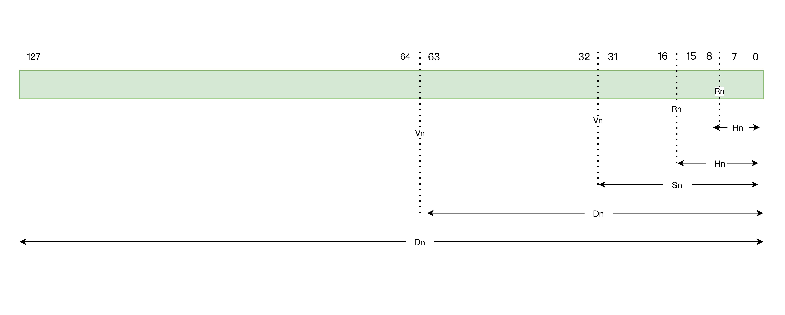
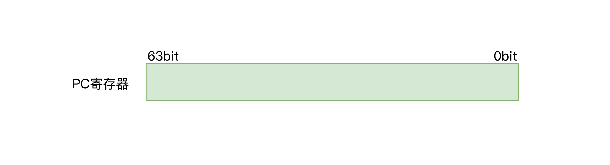
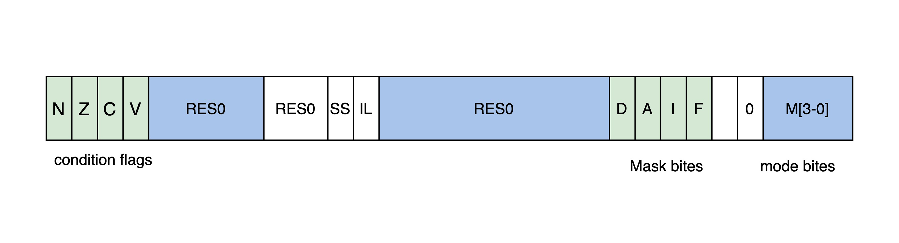
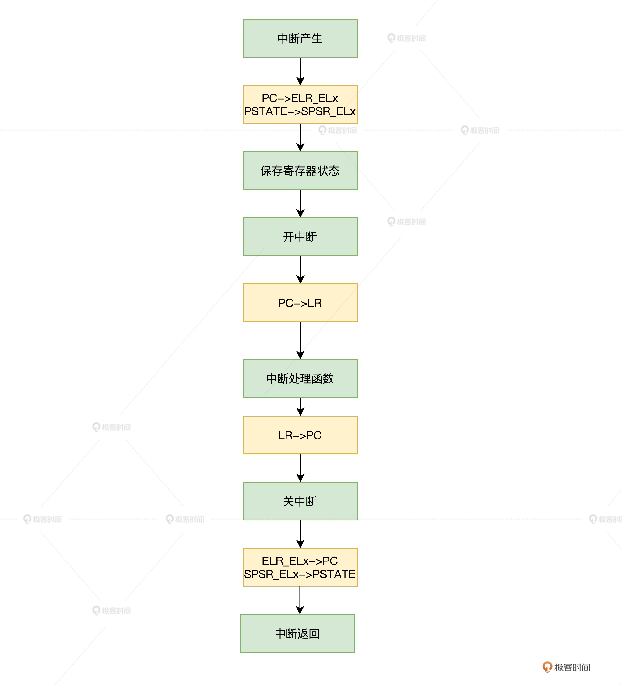

- 00 开篇词 为什么要学写一个操作系统？.md.html
- 00 编辑手记 升级认知，迭代自己的操作系统.md.html
- 01 程序的运行过程：从代码到机器运行.md.html
- 02 几行汇编几行C：实现一个最简单的内核.md.html
- 03 黑盒之中有什么：内核结构与设计.md.html
- 04 震撼的Linux全景图：业界成熟的内核架构长什么样？.md.html
- 05 CPU工作模式：执行程序的三种模式.md.html
- 06 虚幻与真实：程序中的地址如何转换？.md.html
- 07 Cache与内存：程序放在哪儿？.md.html
- 08 锁：并发操作中，解决数据同步的四种方法.md.html
- 09 瞧一瞧Linux：Linux的自旋锁和信号量如何实现？.md.html
- 10 设置工作模式与环境（上）：建立计算机.md.html
- 11 设置工作模式与环境（中）：建造二级引导器.md.html
- 12 设置工作模式与环境（下）：探查和收集信息.md.html
- 13 第一个C函数：如何实现板级初始化？.md.html
- 14 Linux初始化（上）：GRUB与vmlinuz的结构.md.html
- 15 Linux初始化（下）：从_start到第一个进程.md.html
- 16 划分土地（上）：如何划分与组织内存？.md.html
- 17 划分土地（中）：如何实现内存页面初始化？.md.html
- 18 划分土地（下）：如何实现内存页的分配与释放？.md.html
- 19 土地不能浪费：如何管理内存对象？.md.html
- 20 土地需求扩大与保障：如何表示虚拟内存？.md.html
- 21 土地需求扩大与保障：如何分配和释放虚拟内存？.md.html
- 22 瞧一瞧Linux：伙伴系统如何分配内存？.md.html
- 23 瞧一瞧Linux：SLAB如何分配内存？.md.html
- 24 活动的描述：到底什么是进程？.md.html
- 25 多个活动要安排（上）：多进程如何调度？.md.html
- 26 多个活动要安排（下）：如何实现进程的等待与唤醒机制？.md.html
- 27 瞧一瞧Linux：Linux如何实现进程与进程调度_.md.html
- 28 部门分类：如何表示设备类型与设备驱动？.md.html
- 29 部门建立：如何在内核中注册设备？.md.html
- 30 部门响应：设备如何处理内核I_O包？.md.html
- 31 瞧一瞧Linux：如何获取所有设备信息？.md.html
- 32 仓库结构：如何组织文件_.md.html
- 33 仓库划分：文件系统的格式化操作.md.html
- 34 仓库管理：如何实现文件的六大基本操作？.md.html
- 35 瞧一瞧Linux：虚拟文件系统如何管理文件？.md.html
- 36 从URL到网卡：如何全局观察网络数据流动？.md.html
- 37 从内核到应用：网络数据在内核中如何流转.md.html
- 38 从单排到团战：详解操作系统的宏观网络架构.md.html
- 39 瞧一瞧Linux：详解socket实现与网络编程接口.md.html
- 40 瞧一瞧Linux：详解socket的接口实现.md.html
- 41 服务接口：如何搭建沟通桥梁？.md.html
- 42 瞧一瞧Linux：如何实现系统API？.md.html
- 43 虚拟机内核：KVM是什么？.md.html
- 44 容器：如何理解容器的实现机制？.md.html
- 45 ARM新宠：苹果的M1芯片因何而快？.md.html
- 46 AArch64体系：ARM最新编程架构模型剖析.md.html
- LMOS来信：第二季课程带你“手撕”计算机基础.md.html
- 大咖助场 以无法为有法，以无限为有限.md.html
- 用户故事 yiyang：我的上机实验“爬坑指南”.md.html
- 用户故事 成为面向“知识库”的工程师.md.html
- 用户故事 技术人如何做选择，路才越走越宽？.md.html
- 用户故事 操作系统发烧友：看不懂？因为你没动手.md.html
- 用户故事 用好动态调试，助力课程学习.md.html
- 用户故事 艾同学：路虽远，行则将至.md.html
- 结束语 生活可以一地鸡毛，但操作系统却是心中的光.md.html
- 捐赠
46 AArch64体系：ARM最新编程架构模型剖析
你好，我是LMOS。
在今天，Andriod+ARM已经成了移动领域的霸主，这与当年的Windows+Intel何其相似。之前我们已经在Intel的x86 CPU上实现了Cosmos，今天我会给你讲讲ARM的AArch64体系结构，带你扩展一下视野。
首先，我们来看看什么是AArch64体系，然后分析一下AArch64体系有什么特点，最后了解一下AArch64体系下运行程序的基础，包括AArch64体系下的寄存器、运行模式、异常与中断处理，以及AArch64体系的地址空间与内存模型。
话不多说，下面我们进入正题。
什么是AArch64体系
ARM架构在不断发展，现在它在各个领域都得到了非常广泛地应用。
自从Acorn公司于1983年开始发布第一个版本，到目前为止，有九个主要版本，版本号由1到9表示。2011年，Acorn公司发布了ARMv8版本。
ARMv8是首款支持64位指令集的ARM处理器架构，它兼容了ARMv7与之前处理器的技术基础，同样它也兼容现有的A32（ARM 32bit）指令集，还扩充了基于64bit的AArch64架构。
下面我们一起来看看ARMv8一共定义了哪几种架构，一共有三种。
1.ARMv8-A（Application）架构，支持基于内存管理的虚拟内存系统体系结构（VMSA），支持A64、A32和T32指令集，主打高性能，在我们的移动智能设备中广泛应用。
2.ARMv8-R（Real-time）架构，支持基于内存保护的受保护内存系统架构（PMSA），支持A32和T32指令集，一般用于实时计算系统。
3.ARMv8-M（Microcontroller架构），是一个压缩成本的嵌入式架构，而且需要极低延迟中断处理。它支持T32指令集的变体，主打低功耗，一般用于物联网设备。
今天我们要讨论的AArch64，它只是ARMv8-A架构下的一种执行状态，“64”表示内存或者数据都保存在64位的寄存器中，并且它的基本指令集可以用64位寄存器进行数据运算处理。
AArch64体系的寄存器
一款处理器要运行程序和处理数据，必须要有一定数量的寄存器。特别是基于RISC（精简指令集）架构的ARM处理器，寄存器数量非常之多，因为大量的指令操作的就是寄存器。
ARMv8-AArch64体系下的寄存器简单可以分为以下几类。
1.通用寄存器- 2.特殊寄存器- 3.系统寄存器
下面我们分别来看看这三类寄存器。
通用寄存器R0-R30
首先来看通用寄存器（general-purpose registers），通用寄存器一共为31个，从R0到R30，这个31个寄存器可以作为全64位使用，也可以只使用其中的低32位。
全64位的寄存器以x0到x30名称进行引用，用于32位或者64位的整数运算或者64位的寻址；低32位寄存器以W0到W30名称进行引用，只能用于32位的整数运算或者32位的寻址。为了帮你理解，我还在后面画了示意图。
通用寄存器中还有32个向量寄存器（SIMD），编号从V0到V31。因为向量计算依然是数据运算类的，所以要把它们归纳到通用寄存器中。每个向量寄存器都是128位的，但是它们可以单独使用其中的8位、16位、32位、64位，它们的访问方式和索引名称如下所示。
- Q0到Q31为一个128-bit的向量寄存器 ；
- D0到D31为一个64-bit的向量寄存器；
- S0到S31为一个32-bit的向量寄存器；
- H0到H31为一个16-bit的向量寄存器；
- B0到B31为一个8-bit的向量寄存器；

特殊寄存器
特殊寄存器（spseical registers）比通用寄存器稍微复杂一些，它还可以细分，包括程序计数寄存器（PC），栈指针寄存器（SP），异常链接寄存器（ELR_ELx），程序状态寄存器（PSTATE、SPSR_ELx）等。
PC寄存器
PC寄存器，保存当前指令地址的64位程序计数器，指向即将要执行的下一条指令，CPU正是在这个寄存器的指引下，一条一条地运行代码指令。在ARMv7上，PC寄存器就是通用寄存器R15，而在ARMv8上，PC寄存器不再是通用寄存器，不能直接被修改，只可以通过隐式的指令来改变，例如PC-relative load。

SP寄存器
SP是64位的栈指针寄存器，可以通过WSP寄存器访问低32位，在指令中使用SP作为操作数，表示使用当前栈指针。C语言调用函数和分配局部变量都需要用栈，栈是一种后进先出的内存空间，而SP寄存器中保存的就是栈顶的内存地址。

ELR_ELx异常链接寄存器
每个异常状态下都有一个ELR_EL寄存器，ELR_ELx 寄存器是异常综合寄存器或者异常状态寄存器 ，负责保存异常进入Elx的地址和发生异常的原因等信息。
该寄存器只有ELR_EL1、ELR_EL2、ELR_EL3这几种，没用ELR_EL0寄存器，因为异常不会routing(target)到EL0。例如：16bit指令的异常、32bit指令的异常、simd浮点运算的异常、MSR/MRS的异常。
PSTATE
PSTATE不是单独的一个寄存器，而是保存当前PE（Processing Element）状态的一组寄存器统称，其中可访问寄存器有：NZCV、DAIF、CurrentEL（）、SPSel。这些属于ARMv8新增内容，在64bit下可以代替CPSR（32位系统下的PE信息）。
type ProcState is (
// PSTATE.{N, Z, C, V}： 条件标志位，这些位的含义跟之前AArch32位一样，分别表示补码标志，运算结果为0标志，进位标志，带符号位溢出标志
bits (1) N, // Negative condition flag
bits (1) Z, // Zero condition flag
bits (1) C, // Carry condition flag
bits (1) V, // oVerflow condition flag
// D表示debug异常产生，比如软件断点指令/断点/观察点/向量捕获/软件单步 等；
// A, I, F表示异步异常标志，异步异常会有两种类型：一种是物理中断产生的，包括SError（系统错误类型，包括外部数据终止），IRQ或者FIQ；
// 另一种是虚拟中断产生的，这种中断发生在运行在EL2管理者enable的情况下：vSError，vIRQ，vFIQ；
bits (1) D, // Debug mask bit [AArch64 only]
bits (1) A, // Asynchronous abort mask bit
bits (1) I, // IRQ mask bit
bits (1) F, // FIQ mask bit
// 异常发生的时候，通过设置MDSCR_EL1.SS 为 1启动单步调试机制；
bits (1) SS, // Software step bit
// 异常执行状态标志，非法异常产生的时候，会设置这个标志位，
bits (1) IL, // Illegal execution state bit
bits (2) EL, // Exception Level (see above)
// 表示当前ELx 所运行的状态，分为AArch64和AArch32:
bits (1) nRW, // not Register Width: 0=64, 1=32
// 某个ELx 下的堆栈指针，EL0下就表示sp_el0；
bits (1) SP, // Stack pointer select: 0=SP0, 1=SPx [AArch64 only]
)
SPSR_ELx 程序状态寄存器
程序在运行中，处理大量数据，无非是进行各种数学运算，而数学运算的结果往往有各种状态，如进位、结果为0、结果是负数等，还有程序的运行状态，是否允许中断，CPU的工作模式，这些信息都保存在程序状态寄存器中，即PSTATE中。
但是当CPU处理异常时，进程相应的ELx状态不同，就要把PSTATE状态信息保存在ELx状态下对应的SPSR_ELx寄存器中。SPSR_ELx寄存器的格式如下所示。

系统寄存器
最后，ARM的CPU上还有一些系统寄存器，用于访问系统配置。
在EL0状态下，大多数系统寄存器是不可访问的，但是部分系统寄存器可以在EL0状态下进行访问，比如Cache ID 寄存器（用于EL0状态下缓存管理）、调试寄存器（用于代码调试，如MDCCSR_EL0、DBGDTR_EL0等）、性能监控寄存器和时钟寄存器等。
ARM-A Arch64体系下CPU的工作模式
其实，AArch64、AArch32体系都是简称，从严格意义上说，它们应该是处理器的两种执行方式或者状态。AArch64体系执行A64指令集，这个指令集是全64位的；AArch32体系则可以执行A32指令集和T32指令集（这节课我们不关注这个体系，所以这些指令集暂不深究）。
不管是AArch64体系还是AArch32体系，ARM CPU的工作模式并没有差异。为了让你把握重点，我们后面只是以AArch64体系为例，探讨ARM处理器的工作模式。
工作模式分类
前面我们介绍了x86 CPU的工作模式，但是x86 CPU的工作模式和ARM的CPU的工作差别很大，x86 CPU的工作模式，包括特权级、处理器位宽、内存的访问与保护。
ARM CPU工作模式则有些不同，究竟有哪些不同呢？
ARM的CPU一共有7种不同工作模式，根据权限和状态，以及进入工作模式的方法等方面的不同，我为你用表格的方式做了梳理。
虽然看起来比较多，但是还是比较好归纳的，在7种模式中，除了用户模式之外的模式，被统称为Privileged Modes(特权模式)。
首先，我们大多数的应用程序是运行在用户模式下的，在用户模式下，是不能够访问受保护的系统资源的。此外，应用程序也无法进行处理器模式的切换的。这样就做到了应用程序和内核程序的权力分隔，确保应用程序不能破坏操作系统。
一旦代码的执行流，切换到特权模式下，其代码就可以访问全部的系统资源了，代码也可以随时进行处理器模式的切换。而且只有在特权模式下，CPU的部分内部寄存器才可以被读写。这里的代码就是指内核代码。
其次，系统模式也是特权模式，代码也是可以访问全部系统资源，也可以随时进行处理器模式的切换，主要供操作系统任务使用。系统模式和用户模式可以访问到的寄存器是同一套的，区别就是它是特权模式，不受用户模式的限制，一般系统模式用于调用操作系统的系统任务。
最后，特权模式下，除系统模式之外的其他五种模式就是异常模式。异常模式一般是在用户的应用程序发生中断异常时，随着特定的异常而进入的，比如之前我们讲过的硬件中断和软件中断，每种异常模式都有对应的一组寄存器，用来保证用户模式下的状态不被异常破坏。这样可以大大减小处理异常的时间，因为不用保存大量用户态寄存器。
处理器如何切换工作模式
前面我们已经了解了ARM架构下CPU的几种工作模式，那么CPU的工作模式是如何切换的呢？
工作模式切换大概分两种情况，一是软件控制，通过修改相应的寄存器或者执行相应的指令；二是当外部中断或是异常发生时，也会导致CPU工作模式的切换。
那么当CPU发生中断或者异常时，CPU进入相应的异常模式时，以下工作由CPU自动完成。
1.在异常模式的R14中，保存前一个工作模式里，下一条即将执行的指令地址；- 2.将CPSR的值复制到异常模式的SPSR中；- 3.将CPSR的工作模式设为该异常模式对应的工作模式；- 4.令PC值等于这个异常模式在异常向量表中的地址，即跳转去执行异常向量表中的相应指令。
处理完中断或者异常，就需要从中断或者异常中返回到发生中断或者异常的位置，继续执行程序。这个从异常工作模式退回到之前的工作模式时，需要由软件来完成后面这两项工作。
1.将异常模式的R14减去一个适当的值（4或8）后，赋给PC寄存器；- 2.将异常模式SPSR的值赋给CPSR；
好了，以上就是CPU切换工作的细节，有了这个基础，接下来我们一起看看AArch64体系下CPU是如何处理中断或者异常的。
AArch64体系如何处理中断
现在我们来看看AArch64体系是如何处理中断的，首先我们要搞清楚中断和异常的区别，然后了解它们的处理过程，最后再研究一下中断向量表。
异常和中断
有时候，我们习惯于把异常（Exception）和中断（Interrupt）理解成一回事儿。但是对ARM来说，官方文档用了Exception这个术语来描述广义上的中断，包括异常（Exception）和中断（Interrupt），Exception和Interrupt的执行机制都是一样的，只是触发方式有区别。
这里的异常，切入的视角是处理器被动接收到了异常。异常通常表现为错误，比如CPU执行了未知指令，但CPU明显不能执行这个指令，所以就会产生错误。再比如说，CPU访问了不能访问的内存，这也是错误的。你会发现，共同点是异常都是同步的，不修改程序下次同样会发生。
而中断对应的视角是处理器主动申请，你可以当作是异步的异常，因外部事件产生。中断分为三种，它们分别是IRQ、FIQ和SError。IRQ、FIQ通常是连接到外部中断信号，当外部设备发出中断信号时，CPU就能对此作出响应并处理外部设备需要完成的操作。
中断处理
我们在了解中断处理之前，首先要搞明白异常级别。
在全局ARMV8-A体系结构中，定义了四个异常级别（Exception Level）从EL0到El3，每个异常级别的权限不同，你不妨想像一下x86 CPU的R3～R0特权级。
只不过ARMV8-A体系结构下EL0为最低权限模式，也就是对应用户态，处理的是应用程序；EL1处理的是OS内核层，对应的是内核态；EL2是Supervisor模式，处理的则是可以跑多个虚拟OS内核的管理软件，对应的是虚拟机管理态，它是可选的，如Hypervisor用于和virtualization扩展；EL3运行的是安全管理（Secure Monitor），处理的是监控态，用于security扩展。
开发通用的操作系统内核只需要使用到EL1，EL2两个异常级别，我为你画了一幅EL模型图，如下所示。

现在我们来看看中断或者异常发生时，EL级别的切换，这里分为两种情况。
第一种是高级别向低级别切换，这种方式通过修改PSTATE寄存器中的值来实现，EL异常级别就保存在这个寄存器中；第二种是低级别向高级别切换，通过触发中断或者异常的方式进行切换的。
在这两种切换过程中，如果高级的状态是AArch64，低级的可以是AArch64或者AArch32，也就是可以向下兼容；如果高级的是AArch32，那么低级的也一定要是AArch32。
当一个中断或者异常触发后，CPU的操作流程如下所示。
1.更新SPSR_ELx寄存器，即当前的PSTATE寄存器的信息存储在SPSR_ELx寄存，以便中断结束时恢复到 PSTATE 寄存器。- 2.更新PSTATE寄存器以反映新的处理器状态，这个过程中，中断级别可能会发生变化。- 3.发生中断时的下一条指令地址存储在 ELR_ELx寄存器中，以便中断返回后，能继续运行。- 4.当中断处理完成后，由高级别返回低级别时，需要使用ERET指令返回。
下图能帮你更加清楚地理解这一行为。

上图已经清楚地展示了，中断或者异常发生时，其中几个关键寄存器是如何保存和恢复的。
中断向量表
当中断或者异常发生后，CPU进行相应的操作后，必须要跳转到相应的地址开始运行相应的代码，进行中断或者异常的处理，这个地址就是中断向量。由于有多个中断或者异常，于是就形成了中断向量表。
在AArch64中，每个中断或者异常触发时会产生EL级别切换。通常在EL0级别调用svc指令，触发一个同步异常，CPU则会切换到EL1级别；如果在EL0级别来了一个IRQ或FIQ，就会触发一个异步中断，CPU会根据SCR寄存器中的中断配置来决定切换EL1或EL2或EL3级别，同时也会区分EL级别使用的是AArch64，还是AArch32的指令集。
16个向量的分类和偏移地址在向量表中的关系如下所示。

上表中分了四个小表，小表中的每一个entry由不同的中断的类型（IRQ，FIQ，SError，Synchronous）决定。具体使用哪一个小表由以下几个条件决定。
- 如果中断发生在同一中断级别，并且使用的栈指针是SP_EL0，则使用SP_EL0这张表。
- 如果中断发生在同一中断级别，并且使用的栈指针是SP_EL1/2/3，则使用SP_EL这张表。
- 如果中断发生在较低的中断级别，使用的小表则为下一个较低级别（AArch64或AArch32）的执行状态。
有了这些硬件机制的支持，就可以完美支持现代意义中的操作系统了。
AArch64体系如何访问内存
无论是操作系统内核代码还是应用程序代码，它们都是放在内存中的，CPU要执行相应的代码指令，就要访问内存。访问内存有两大关键，一是寻址，这表现为内存的地址空间；第二个关键点是内存空间的保护，即内存地址的映射和转换。下面我分别解读一下这两个关键点。
AArch64体系下的地址空间
对于工作在AArch64体系下的CPU来说，没有启动MMU的情况下，ARM的CPU发出的地址，就是物理地址直接通过这个寻址内存空间。
但是你别以为AArch64体系下有64位的寄存器，能发出64位的地址，就一定能寻址64位地址空间的内存。其实实际只能使用52位或者48位的地址，这里我们只讨论使用48位地址的情况。如果启用了MMU，那么CPU会通过虚拟地址寻址，MMU负责将虚拟地址转换为物理地址，进而访问实际的物理地址空间。这个过程如下图所示。

上图中可以发现，如果CPU发出的虚拟地址在0x0～0x0000ffffffffffff范围内，MMU就会使用TTBR0_ELx寄存器指向的地址转换表进行物理地址的转换；如果CPU发出的虚拟地址在0xffff000000000000～0xffffffffffffffff，MMU使用TTBR1_ELx寄存器指向的地址转换表进行物理地址的转换。
究竟虚拟地址是如何转换成物理地址的呢？我们接着往下看。
AArch64体系下地址映射和转换
按照我们以往的经验来看，这里肯定是有一张把虚拟地址转化为物理地址的表，给出一个虚拟地址，通过查表就可以查到物理地址。但是实际过程却不是这么简单，在这里通常要有一个多级的查表过程。
MMU将虚拟地址映射到物理地址是以页（Page）为单位的，ARMv8架构的AArch64体系可以支持48位虚拟地址，并配置成4级页表（4K页），或者3级页表（64K页）。
例如，虚拟地址0xb7001000~0xb7001fff是一个页，可能被MMU映射到物理地址0x2000~0x2fff，物理内存中的一个物理页面也称为一个页框（Page Frame）。
那么MMU执行地址转换的过程是怎样呢？我们看一看4K页表的情况下，虚拟地址转换物理地址的逻辑图。

结合上图我们看到，首先要将64位的虚拟内存分成多个位段，这些位段就是用来索引不同级别页表中的entry的。那么MMU是如何具体操作的呢，一共分五步。
第一步从虚拟地址位段[47:39]开始，用来索引0级页表，0级页表的物理基地址存放在TTBR_ELx寄存器中，以虚拟地址位段[47:39]为索引，找到0级页表中的某个entry，该entry会返回1级页表的基地址。
第二步，接着之前找到的1级页表的基地址，现在可以用虚拟地址位段[38:30]索引到1级页表的某个entry，该entry在4KB页表情况下，返回的是2级页表的基地址。
然后到了第三步，有了2级页表基地址，就可以用虚拟地址位段[29:21]作为索引找到2级页表中的某个entry，该entry返回3级页表的基地址。
再然后是第四步，有了3级页表基地址，则用虚拟地址位段[20:12]作为索引找到3级页表中的某个entry，该entry返回的是物理内存页面的基地址。
最后一步，我们得到物理内存页面基地址，用虚拟地址剩余的位段[11:0]作为索引，就能访问到4KB大小的物理内存页面内的某个字节了。
这个过程从TTBR_ELx寄存器开始到0级页表，接着到1级页表，然后到2级页表，再然后到3级页表，最终到物理页面，CPU一次寻址，其实是五次访问物理内存。这个过程完全是由硬件处理的，每次寻址时MMU就自动完成前面这五步，不需要我们编写指令来控制MMU，但是我们要保证内核维护正确的页表项。
有了MMU硬件转换机制，操作系统只需要控制页表就能控制内存的映射和隔离了。
总结
这节课我们一起了解了ARM的AArch64体系，它是ARMV8-A下的一种执行状态。作为首款支持64位的处理器架构，AArch64体系不只是32 位ARM 构架的兼容扩展，还引入了新的A64指令集。
处理器想要运行程序、处理数据，离不开各种寄存器。我们学习了AARch64下的三类寄存器，包括通用寄存器、特殊寄存器和系统寄存器。
相比x86系统，AArch64的CPU工作模式更加多样，一共有七种工作模式。之后，我们分别研究了工作模式切换还有基于EL0-3的异常中断处理，以及AArch64下的内存架构和访问方式。访问内存，你重点要掌握的是访问内存的两大关键点，一是寻址，二是内存空间的保护。
自从2011年ARM发布首款支持64位的ARMv8版本后，到现在已经过去了十年。在今年ARM也宣布了下一代芯片架构ARMv9的部分技术细节，并称其为十年来最大的创新，也将是未来十年内千亿级别芯片的基础，其在CPU性能、安全性、AI支持上有了显著提升。
但是ARMv9不会像ARMv7到ARMv8的根本性的执行模式和指令集的变化，ARMv9继续使用AArch64作为基准指令集，但是在其功能上增加了一些非常重要的扩展，ARMv9开发的处理器预计将在2022年正式面世，让我们拭目以待！
思考题
请问，ARMv8，有多少特权级？每个特权级有什么作用？
欢迎你在留言区记录你的思考，也欢迎把这节课分享给有需要的朋友。
我是LMOS，我们下节课见。
© 2019 - 2023 Liangliang Lee. Powered by gin and hexo-theme-book.